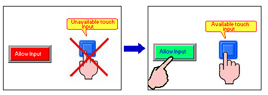
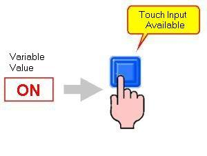
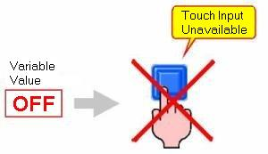

|
|
|
|
|
|
|
|
If you enable the Interlock feature for your switch, selector or action, touch input is enabled only if a certain condition is met. This feature prevents accidental touch inputs.

Select Enable Interlock and specify the BOOL or integer variable or expression used to allow touch input. On the selector or switch, this check box is on the Advanced tab. In the action, this check box is in the first step of the wizard.
When the defined variable is true, touch input is possible; when false, touch input is ignored. The following example uses a BOOL variable as the Enable Interlock variable.



Use BOOL or integer variables or boolean expressions with the Interlock feature.
|
Data Type |
ON/True |
OFF/False |
|
BOOL |
ON(1) |
OFF(0) |
|
Integer |
Any value other than 0 |
0 |
|
Boolean Expression |
True |
False |
When using Touch animation, you can use the Condition Setting in the same way as the Interlock.